Applications of Machine Learning for Fluid Mechanics
This blog is the notes for a video called “Machine Learning for Fluid Mechanics“, which is a brief introduction for a paper (Brunton, Steven L., Bernd R. Noack, and Petros Koumoutsakos. “Machine learning for fluid mechanics.” Annual Review of Fluid Mechanics 52 (2020): 477-508.). If you want to know the details, please find the original video and paper.
What is Machine Learning (ML)?
ML:
- Models from Data via Optimization
Any sufficiently advanced technology is indistinguishable from magic.
– Arthur C. Clarke
Fluid dynamics tasks:
- Reduction
- Modeling
- Control
- Sensing
- Closure
Optimization problems:
- High-dimensional
- Non-linear
- Non-convex
- Multiscale
What kind of ML is needed in science and engineering?
We need Interpretable and Generalizable Machine Learning in science and engineering field.
Everything should be made as simple as possible, but not simpler.
– Albert Einstein
How to build a model like $F=ma$?
Features for ML in science and engineering:
- Sparse
- Low-dimensional
- Robust
Schematic: ML + CFD
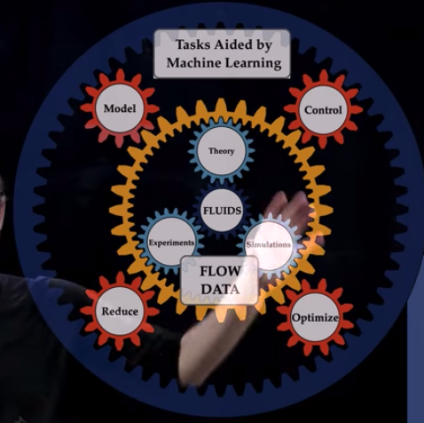
Why ML could work?
Because patterns exist in fluid flow.
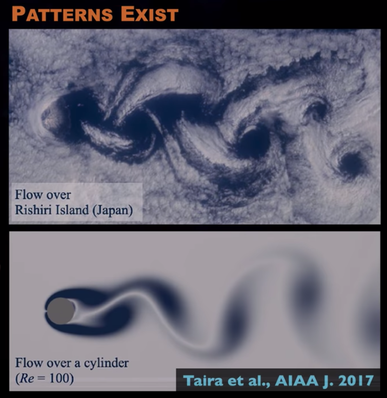
Applications
Fluid flow decomposition
PCA (Shallow, linear) -> Autoencoder (Deep)
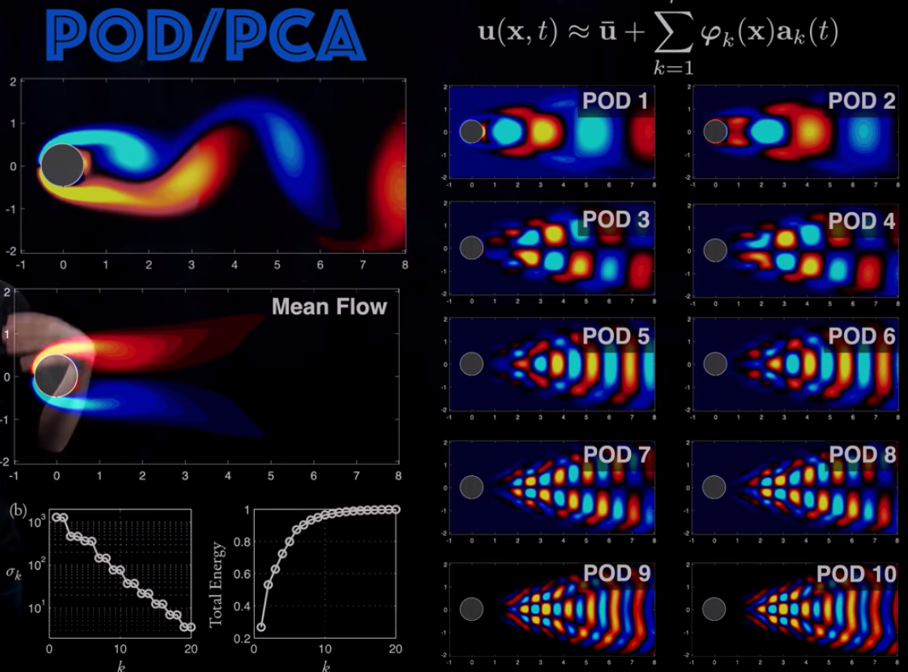
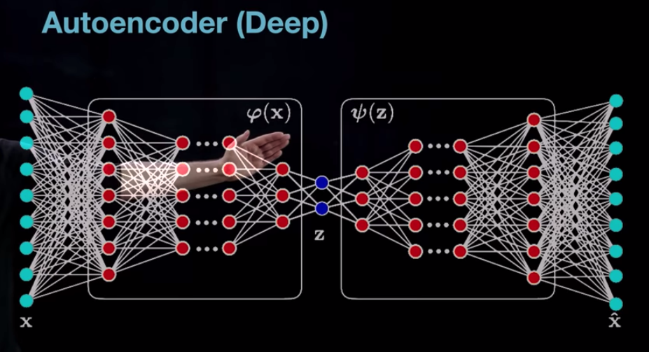
Denoise for Fluid Flow
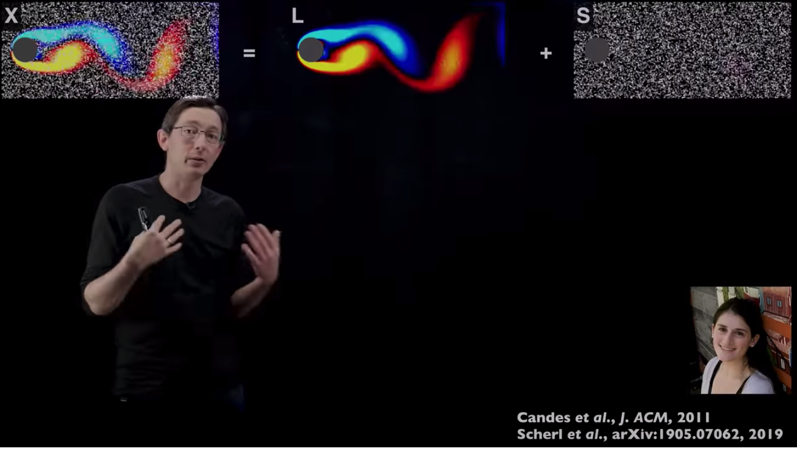
Turbulence modeling
Paper:
Schlatter, Philipp, et al. “The structure of a turbulent boundary layer studied by numerical simulation.” arXiv preprint arXiv:1010.4000 (2010).
Duraisamy, Karthik, Gianluca Iaccarino, and Heng Xiao. “Turbulence modeling in the age of data.” Annual Review of Fluid Mechanics 51 (2019): 357-377.
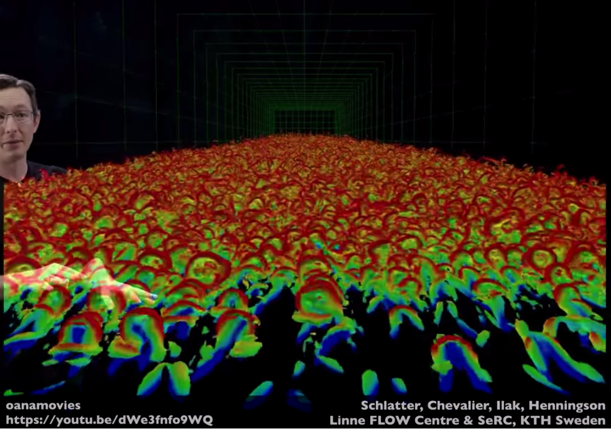
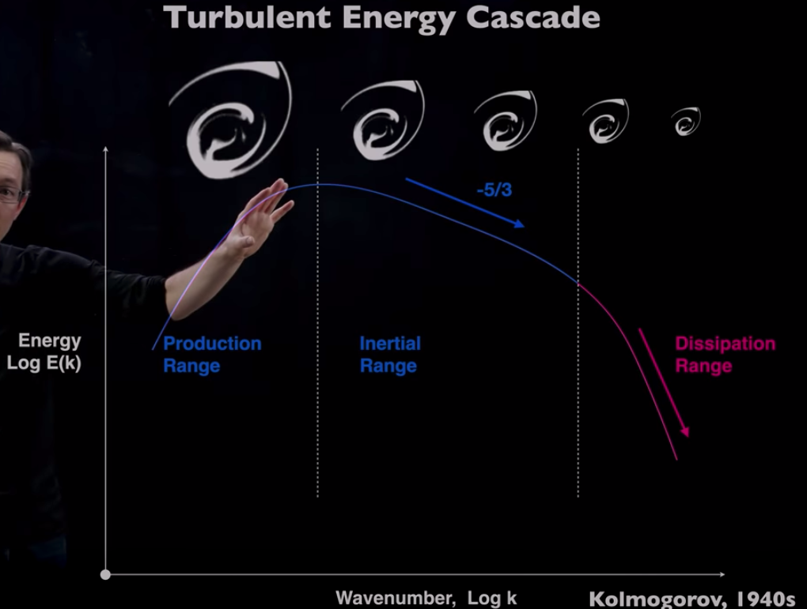
ML_CFD solver
Paper:
- Ling, Julia, Andrew Kurzawski, and Jeremy Templeton. “Reynolds averaged turbulence modelling using deep neural networks with embedded invariance.” Journal of Fluid Mechanics 807 (2016): 155-166.
Add physical constraints and achieve accurate and pyhsical.
Super-resolution
Paper:
- Erichson, N. Benjamin, Michael Muehlebach, and Michael W. Mahoney. “Physics-informed autoencoders for Lyapunov-stable fluid flow prediction.” arXiv preprint arXiv:1905.10866 (2019).
Interpolation and Extrapolation
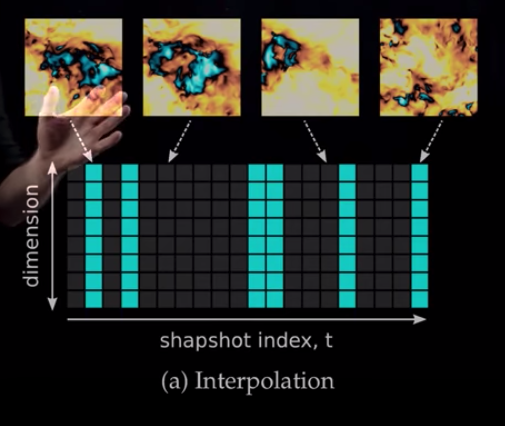
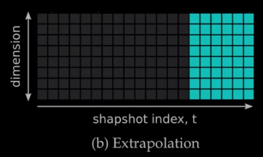
Solve PDEs
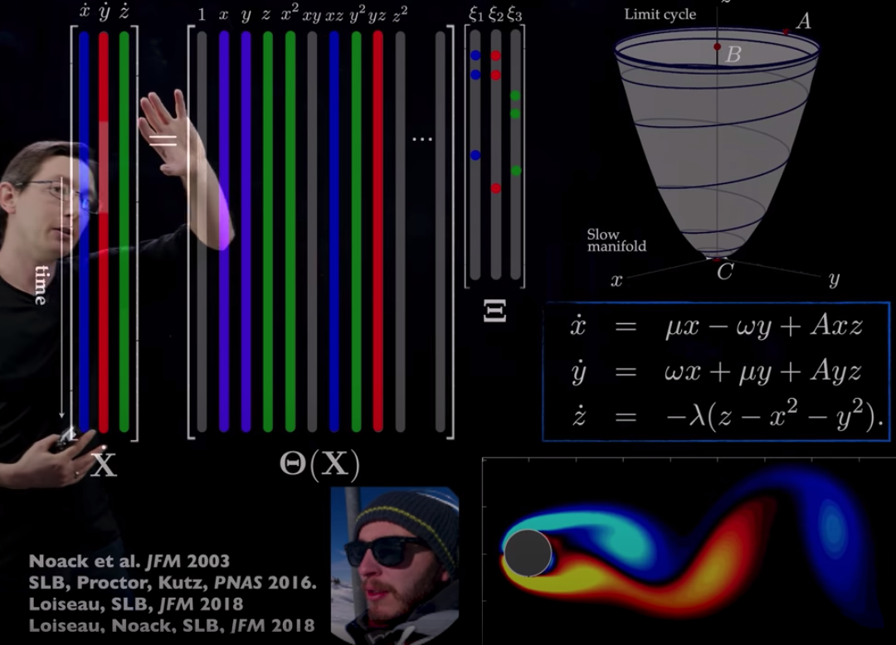
Beyond understanding: control
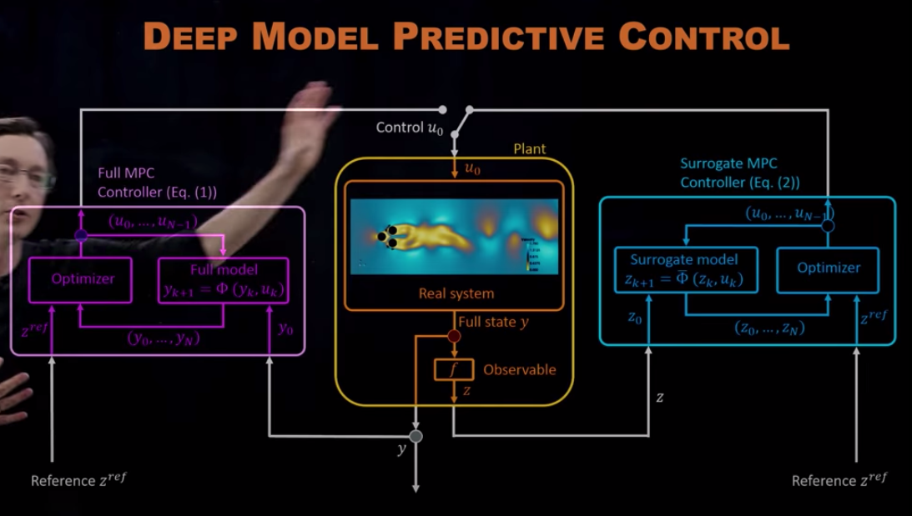
Inspiration from biology
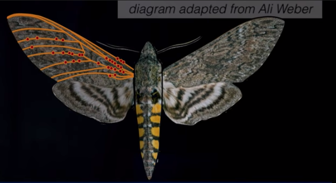
Prev: Machine Learning / Deep Learning for Partial Differential Equations (PDEs) Solvers
Next: Robust and Explainable Image Classification Based on Logits Kernel Density Estimation